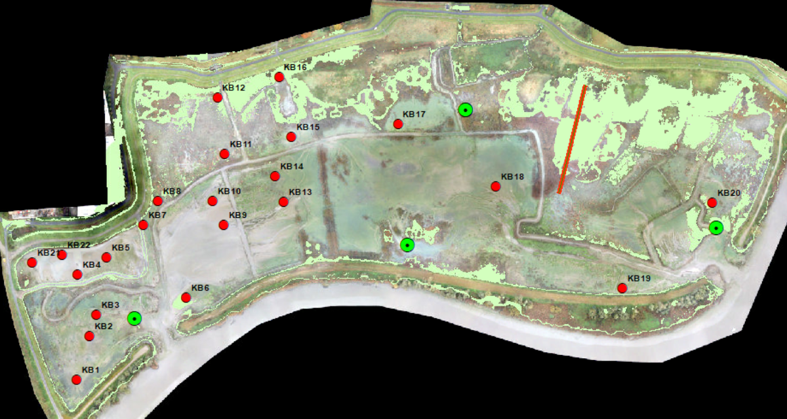
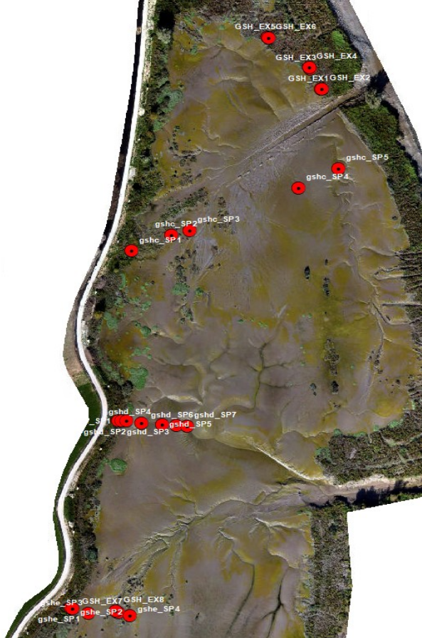
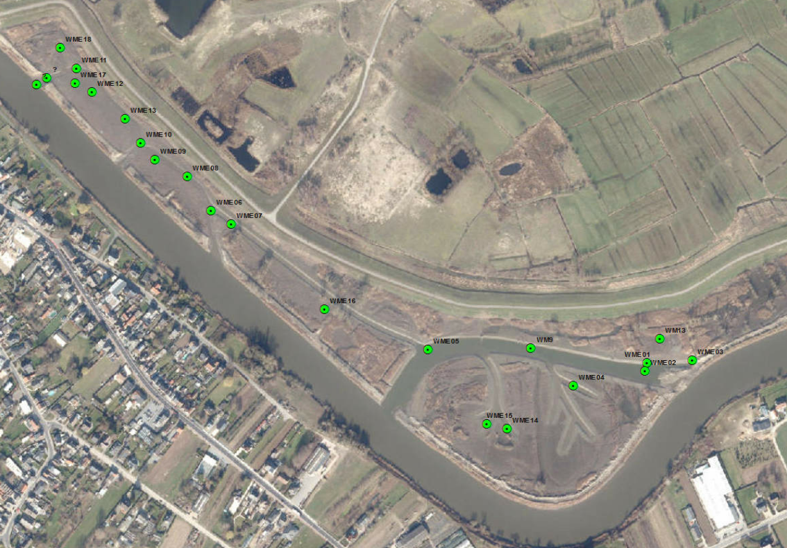
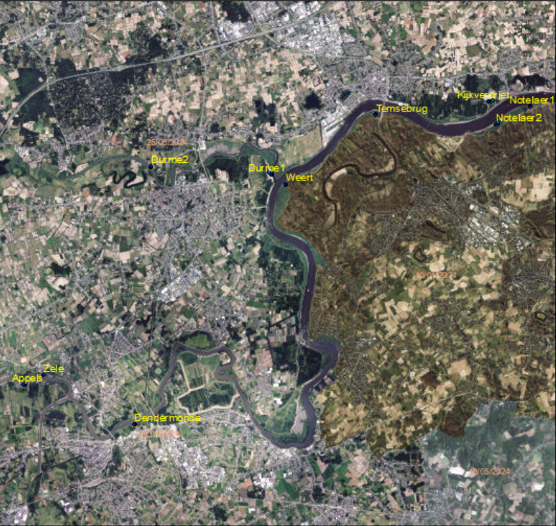
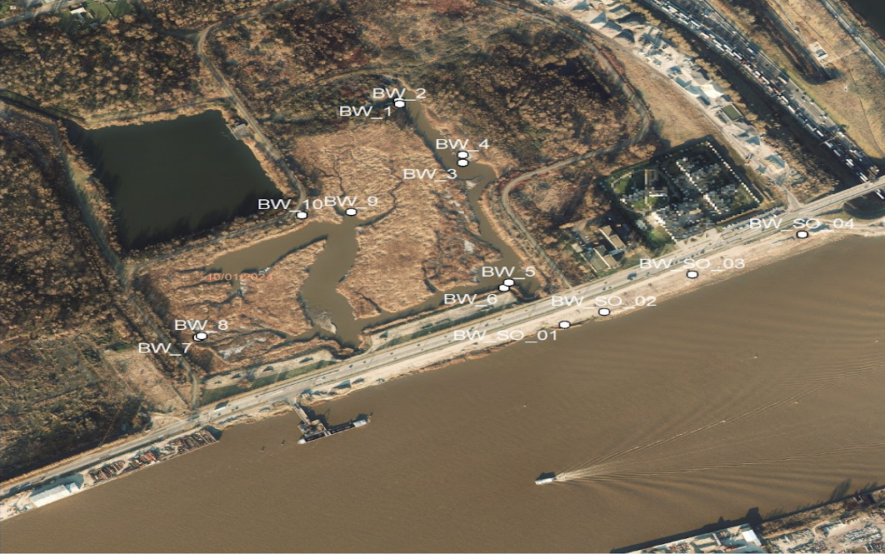

Veldstaalnameprotocol quickscan knijtenlarven
Anouk Organe
 0009-0006-1202-1863
0009-0006-1202-1863
Instituut voor Natuur- en Bosonderzoek (INBO)
anouk.organe@inbo.be
Frank Van De Meutter
0000-0002-9850-1860
Instituut voor Natuur- en Bosonderzoek (INBO)
frank.vandemeutter@inbo.be
Merlijn Jocqué
0000-0002-7196-7476
Instituut voor Natuur- en Bosonderzoek (INBO)
merlijn.jocque@inbo.be
2026-08-03
10.5281/zenodo.21773412
Metadata
| reviewers | documentbeheerder | protocolcode | versienummer | taal | thema |
|---|---|---|---|---|---|
| Florian Van Hecke | Toon Westra | sfp-101-nl | 2026.02 | nl | water |
Controleer deze tabel om te zien of een meer recente versie beschikbaar is.
1 Wijzigingen t.o.v. vorige versies
1.1 2026.02
- Eerste versie van het protocol
3 Onderwerp
3.2 Doelstelling en toepassingsgebied
3.2.1 Kadering
Sinds de waterkwaliteit van de Zeeschelde na 2008 is verbeterd, worden op steeds meer plaatsen langs de Zeeschelde overlast door knijten (Culicoides, Ceratopogonidae) gemeld. Vermoedelijk gaat het in de meeste gevallen om Culicoides riethi Kieffer, 1914. De larven van deze soort komen voornamelijk voor in de hogere delen van intertidale zoetwaterslikken. De knijten komen soms in grote aantallen voor en kunnen heel wat hinder veroorzaken. Het toenemende aantal adviesvragen omtrent knijten, hun habitat, ecologie en bestrijding leidde tot een sterke toename van staalnames, waardoor de nood ontstond voor een gestandaardiseerde snelle en betrouwbare methode om de aanwezigheid van knijtenlarven vast te stellen.
3.2.2 Doelstelling
Dit document beschrijft het INBO “QuickScan” protocol voor het bepalen van de densiteiten aan knijtenlarven (Culidoides riethi) in slikgebieden langs de Zeeschelde. Het protocol omvat de staalname in het veld en de procedure voor verwerking in het labo van biota.
De QuickScan omvat enkel de bemonstering van biota in het veld en de snelle verwerking van de niet gepreserveerde stalen in het labo. Afhankelijk van de vraagstelling wordt dit best gecombineerd met sediment bemonsteringen die kijken naar granulometrie, gehalte organisch materiaal, watergehalte, bodemdichtheid, en concentratie chlorofyl-a.
5 Principe
Dit protocol beschrijft de procedure voor het bepalen van de densiteiten aan knijtenlarven (Culidoides riethi) in slikgebieden langs de Zeeschelde. De voorgeschreven methode moet garanderen dat het geanalyseerde staal representatief is voor de actuele situatie op moment van de staalname in de slikken. Via dit veldprotocol zou elke medewerker in staat moeten zijn om de veldstaalname en laboverwerking van slibstalen voor knijtenonderzoek uit te voeren.
6 Vereiste competenties
Voldoende kennis van benthos om onderscheid te kunnen maken tussen knijtenlarven en andere organismen in de slibstalen tijdens het triëren in het labo.
7 Benodigdheden
7.2 Materiaal
7.2.1 Veldstaalname
Benthossteekbuis van minimum 20 cm lang met een diameter van 4,5 cm + bijkomende stamper om het staal uit te duwen.
Gelabelde potten (0,5 L) of zakjes. De labels worden bij voorkeur vooraf aangebracht met een watervaste stift. Controleer steeds dat de stift water- en wrijfvast is.
8 Werkwijze
8.1 Voorbereidingen
Inspelend op een gedefinieerde onderzoeksvraag wordt een relevant staalname design bepaald met de juiste replicatie en genoeg bemonsteringen om de vraagstelling statistisch te analyseren.
Zodra het ontwerp en het aantal staalnamepunten vastligt, wordt nagegaan waar deze punten in het veld geplaatst kunnen worden. Hiervoor wordt vooraf meestal een recente luchtfoto geraadpleegd waarop het slikoppervlak van het studiegebied duidelijk zichtbaar is. Op basis van de luchtfoto’s worden punten of zones geselecteerd die potentieel hebben om geschikt habitat te zijn voor knijten. Eerder onderzoek (Van Ryckegem et al., 2021) toont dat vooral hooggelegen, slappe en laagdynamische slikken hoge densiteiten aan knijtenlarven bevatten. Er wordt voorlopig aangenomen dat Culicoides riethi als filtervoedende larve vooral te vinden is in laagdynamische stukken op het slik, stukken die vaak gekenmerkt worden door slikdelen met duidelijk groene algenbedekking. Geselecteerde punten worden ingeladen in de Trimble-GPS. Controleer het getij met het getijdenboekje of via waterinfo.
8.2 Uitvoering
8.2.1 In het veld
8.2.1.1 Locatiebepaling
Bij vooraf geselecteerde en ingegeven punten worden deze gezocht aan de hand van de Trimble-GPS. Omdat situaties in het veld kunnen verschillen van de geambieerde condities op basis van luchtfoto’s, kunnen bij evaluatie in het veld vooraf geselecteerd punten licht verschoven worden zodat effectief geschikte condities voor de oorspronkelijke vraagstelling (bvb TAW binnen bepaalde range) bemonsterd wordt.
Bij het nemen van bijkomende punten wordt elk punt ingemeten met Trimble-GPS (xyz) en bewaard onder de vooraf gedefinieerde staalnaamcode.
8.2.1.2 Staalname biota
Per staalnamepunt worden twee stalen genomen, op maximum 15 cm van het punt ingemeten met de Trimble-GPS. De replica’s worden ongeveer 15 cm van elkaar genomen. De benthossteekbuis wordt minstens 7 cm diep verticaal in het slik geduwd. Verwijder de buis uit het slik en duw 7 cm uit (met de stamper) in het daarvoor bestemde potje/zakje. De twee replica’s worden in afzonderlijke potten/zakjes bewaard. Elke knijtenstaal heeft als label de naam van het staalnamepunt gevolgd door “_a” of” “_b” (toewijzing mag random). Zo is duidelijk dat de stalen bij elkaar horen. Er wordt geen bewaarmiddel toegevoegd. Tijdens transport worden de stalen bewaard in een koelbox (4-10° C) en nadien bewaard in een koelkast (4°C) tot verwerking. Dit moet gebeuren met de levende knijtenlarven omdat deze het gemakkelijkst te vinden en herkennen zijn op basis van hun karakteristieke beweging.
8.2.1.3 Optioneel: staalname sediment
Granulometrie en Bulk density
Het sedimentstaal wordt met een kleine steekbuis (diameter 1 cm) 10 cmdiep genomen tussen de 2 replica’s van een staalnamepunt. Dit is een standaard sediment staal cf. MONEOS protocol (Van Ryckegem et al., 2025). Dit sedimentstaal wordt in een potje bewaard en krijgt het label van het staalnamepunt. Het staal wordt ingevroren bewaard (-20°C) tot analyse.
Het bulk density staal wordt genomen met een Kopecky ring (diameter = 5 cm, diepte = 5 cm). Het staal wordt in een zakje/potje overgebracht met het label van het staalnamepunt. Het staal wordt ingevroren bewaard (-20°C) tot analyse.
Chlorofyl-a
- Met een kleine steekbuis (diameter 1 cm) wordt tussen de 2 replica’s van een staalnamepunt tot 4 cm diep gestoken. Dit chlorofyl-a staal wordt in een potje bewaard en krijgt het label van het staalnamepunt. Het staal wordt ingevroren bewaard (-20°C) tot analyse.
| Doel | Aantal | Diameter steekbuis | Diepte | Bewaring | Verwerking |
|---|---|---|---|---|---|
| Knijten | 2 | 4,5 cm | 7 cm | 4 °C | zo snel mogelijk |
| Optioneel | |||||
| Granulometrie | 1 | 2 cm | 10 cm | -20 °C | later |
| Chlorofyl-a | 1 | 2 cm | 4 cm | -20 °C | later |
| Bulk density | 1 | Kopecky | 4 cm | -20 °C | later |
8.2.2 Verwerking in het labo
8.2.2.1 Voorbereiding
Knijtenstalen worden zo snel mogelijk na staalname verwerkt, bij voorkeur binnen de 3 werkdagen, zodat de knijtenlarven nog leven. De stalen worden gezeefd in twee fases over zeven met maaswijdtes van respectievelijk 212 µm en 125 µm.
Het sediment weerhouden in de zeeffractie van 212 µm wordt overgebracht in een witte trieërbak met water. Het sediment weerhouden op de zeeffractie van 125 µm wordt overgebracht in een pot met een kleine hoeveelheid water om het sediment vochtig te houden.
8.2.2.2 Verwerking stalen
De zeeffractie van 212 µm wordt eerst bekeken in een grote witte trieerbak onder een sterk licht. Hierna wordt de zeeffractie van 125 µm bekeken in detail onder de binoculaire microscoop. Alle knijtenlarven en -poppen worden handmatig uitgetrieërd en geteld. Larven worden in instar klassen opgedeeld (Zie studie INBO, ongepubliceerd), geteld en uitgesorteerd. Knijtenlarven worden onderscheiden van ander benthos op basis van hun kenmerkende zwembeweging. Indien morfometrische metingen van de larven gepland zijn, worden de larven per staal in epjes met ethanol verzameld.
Voor de bepaling van de benthosbiomassa worden de monsters eerst in kroesjes geplaatst en gedurende één nacht gedroogd bij 105 °C in een droogstoof. De droogstoof wordt bij het opzetten gecontroleerd via de knop set temperature om na te gaan of de temperatuur correct op 105 °C staat. Na het drogen worden de kroesjes warm gewogen op een analytische balans tot op een duizendste van een gram; dit gewicht wordt genoteerd als het drooggewicht. Vervolgens worden de kroesjes gedurende twee uur verast in een moffeloven bij 550 °C. Hierbij wordt rekening gehouden met een aanlooptijd van ongeveer twee uur om de oven op 550 °C te brengen, waarna de monsters nog twee uur op deze temperatuur blijven. Na het verassen worden de kroesjes opnieuw warm gewogen tot op een duizendste van een gram; dit wordt genoteerd als het asgewicht. Het verschil tussen het drooggewicht en het asgewicht geeft het asvrije drooggewicht (AFDW = drooggewicht - asgewicht), wat in deze procedure overeenkomt met de biomassa van het benthos.
Andere benthos organismen (e.g. Oligochaeta) worden in de Quick scan methode standaard niet mee bekeken om snel en efficiënt een groot aantal stalen te kunnen verwerken.
9 Kwaliteitszorg
Zorg bij de veldstaalname dat de staalnamelocatie effectief slik is. Door het dynamische karakter van estuariene natuur kan dit in praktijk niet overeenkomen met vooraf bepaalde sliklocaties. In het veld kan daarom de exacte locatie nog licht verschoven worden (naar effectieve slikoppervlakken). De aangepaste locatie wordt ingemeten met de trimble-gps.
Volg nauwgezet de gedocumenteerde staalnamemethodiek om reproduceerdbaare resultaten te bekomen.
Check vooraf of alle staalnamepotjes/zakjes correct gelabeld zijn.
Check of alle gps-coördinaten correct ingemeten zijn.
Zorg dat de monsters goed gekoeld blijven tijdens transport.
10 Veiligheid
De staalname in intertidaal gebied gebeurt steeds met minstens twee personen. Draag gepaste kleding om in een intergetijdengebied te werken. Controleer vooraf de getijden en kies bij voorkeur een afgaand getij om voldoende tijd en veiligheid te garanderen. Let extra op in nieuw ontwikkelende gebieden, en consulteer mensen die het gebied kennen.
11 Samenvatting
Een samenvatting van de te volgen stappen:
Voorbereiding
Een relevant staalname design wordt bepaald (replicaten, aantal bemonsteringen).
De puntlocaties in het veld worden bepaald op basis van luchtfoto’s van het slikoppervlak binnen het studiegebied.
Label de potjes/zakjes voor de veldstaalname met de code van het staalnamepunt, gevolgd door _a en _b voor de 2 replicaten per staalnamepunt. De toewijzing mag random gebeuren.
Veldstaalname
Via de trimble-gps worden puntlocaties gezocht (deze kunnen licht verschoven worden obv de actuele situatie in het veld). Bijkomende punten worden ingemeten met de trimble-gps.
Per staalnamepunt worden 2 replicaten genomen (op max 15 cm van het vastgelegde punt). Replicaten worden op ± 15 cm van elkaar genomen.
De benthossteekbuis minimum 7 cm diep verticaal in het slik gestoken. Verwijder de buis uit het slik en duw de inhoud via de stamper in het daarvoor voorziene potje/zakje. De 2 replicaten worden in aparte potjes/zakjes bewaard.
Bewaar de stalen tijdens transport in een koelbox (4-10 °C).
Bewaar de stalen in het labo in een koelkast (4 °C) tot het moment van verwerking.
Verwerking in het labo (idealiter binnen 3 dagen na staalname)
Zeef het staal boven een spoelbak met de zeef met maaswijdte 212 µm.
Breng het sediment weerhouden door de zeef (212 µm) over in een witte trieerbak met water.
Zeef het staal boven een spoelbek met de zeef met maaswijdte 125 µm.
Breng het sediment weerhouden door de zeef (125 µm) over in een pot met een kleine hoeveelheid water om het sediment vochtig te houden.
Bekijk de inhoud van de witte trieerbak (212 µm zeef) onder een sterk licht.
Bekijk de inhoud van de 125 µm-zeef onder een binoculaire microscoop.
De knijtenlarven worden handmatig uitgetrieerd en geteld volgens instar-klassen.
Bepaling benthosbiomassa
De monsters worden in kroesjes geplaatst.
Controleer bij het opzetten van de droogstof of de temperatuur op 105 °C staat.
De kroesjes worden warm gewogen op een analytische balans.
Noteer het drooggewicht.
Plaats de kroesjes in een moffeloven gedurende 2 uur op 550 °C. De oven heeft een aanlooptijd van 2 uur om op temperatuur te komen.
De kroesjes worden warm gewogen op een analytische balans.
Noteer het asgewicht.
Noteer het asvrije drooggewicht (=drooggewicht - asgewicht). Dit is de biomassa van het benthos.
Referenties
Van Ryckegem, G., Van de Meutter, F., Vandevoorde, B., Vanoverbeke, J., Jocque, M., Mertens, W., & Van den Bergh, E. (2021). Knijtenoverlast in Gentbrugge: ecologische kennisopbouw en doeltreffendheid van maatregelen. (Rapporten van het Instituut voor Natuur- en Bosonderzoek; Nr. 25). Instituut voor Natuur- en Bosonderzoek. https://doi.org/10.21436/inbor.36325020
Van Ryckegem, G., Vanoverbeke, J., Van de Meutter, F., Vandevoorde, B., Mertens, A., Mertens, W., Van Braeckel, A., Van Thuyne, G., Maesele, R., Smeekens, V., Thibau, K., Bezdenjesnji, O., Buerms, D., Coudenys, A., De Regge, N., Hessel, K., Lefranc, C., Soors, J., & Van Lierop, F. (2025). MONEOS ‐ geïntegreerd datarapport INBO: toestand Zeeschelde 2024: Monitoringsoverzicht en 1ste lijnsrapportage Geomorfologie, diversiteit Habitats en diversiteit Soorten. (Rapporten van het Instituut voor Natuur- en Bosonderzoek; Nr. 73). Instituut voor Natuur- en Bosonderzoek. https://doi.org/10.21436/inbor.135546610
Overzicht van staalnames met QuickScan methode
De voornaamste gebieden die door het INBO bemonsterd werden met de quick scan methodiek zijn Groot Schoor Hamme, Wijmeers, en Klein Broek. Zowel de ligging van de staalnamepunten als het aantal punten zijn doorheen de jaren aangepast naargelang de evolutie van de gebieden en nieuwe onderzoeksvragen.
Klein Broek (staalname 2025)
De selectie van de vaste staalnamepunten gebeurde op basis van drie criteria:
zones die na realisatie van de ontpoldering als hoog slik of potentieel pionierschor gekarakteriseerd zijn,
zones waar meer dan 5 cm sedimentatie is opgetreden tussen oktober 2023 en januari 2024, en
locaties waar op dronebeelden een microfytobenthosfilm zichtbaar was.
Binnen deze potentiële zones werden tien staalnamepunten geselecteerd, en tien bijkomende punten buiten deze zones, maar in delen die wel voldeden aan de criteria hoog slik en sedimentatie (Figuur 11.1). Deze staalnamepunten werden aangevuld met een hoogteraai (6 punten op een hoogtegradiënt variërend van 6.00 tot 4.00 mTAW).
Sinds 2025 richt de monitoring in Klein Broek zich op de effecten van mitigatiemaatregelen. Specifiek worden de effecten van droogzetting/ inundatie /alle toekomstige geplande veranderingen op de populatie knijten gevolgd.

Figuur 11.1: Staalnamepunten in Klein Broek (rood). De hoogteraai is aangeduid met een rode streep. Locaties van peilbuizen zijn in het groen aangeduid.
Groot Schoor Hamme (2022-2025)
INBO monitorde in 2022 de knijtenlarven op de uitgelegde hoogteraaien ‘c’ en ‘e’, en in 2023 ook op een extra tussenliggende raai ‘d’. Bijkomend werden er 8 extra punten geselecteerd vanaf 2024, waarbij telkens een punt aan de schorrand en één in het schor is gelegd (Figuur 11.2). Het huidige aantal staalnamepunten ligt hierbij op 24.

Figuur 11.2: Staalnamepunten in Groot Schoor Hamme.
Wijmeers (2023-2024)
De vaste staalnamepunten in Wijmeers werden initieel geselecteerd op basis van luchtfoto’s en nadien bijgesteld tijdens een terreinbezoek in 2023. Tijdens dit terreinbezoek werd voornamelijk in het westelijke deel van het gebied geschikt habitat voor knijten vastgesteld. Vanaf 2024 werden bijkomende punten toegevoegd naar aanleiding van meldingen van knijten in de omgeving, ondanks de afwezigheid van larven in de oorspronkelijke stalen. In totaal zijn er twintig staalnamepunten, waarvan er tien in de westelijke zone liggen en tien verspreid over andere zones met potentieel geschikt habitat (Figuur 11.3).

Figuur 11.3: Staalnamepunten in Wijmeers.
Slikgebieden Zeeschelde
In de slikgebieden van de Zeeschelde heeft de QuickScan als doel het aantonen dat ook in de Zeeschelde grote bronpopulaties van knijten kunnen voorkomen.
Binnen elk ‘hotspot’ gebied worden drie geschikte locaties geselecteerd, gebaseerd op luchtfoto’s en kenmerken zoals hoog, laagdynamische slik met een korte overstromingsduur en een zichtbare laag groenalgen. Staalnames gebeuren verder volgens de QuickScan methode hierboven uitgelegd.
Op basis van deze criteria werden 14 potentiële hotspots geselecteerd langs de Schelde (stroomopwaarts van Antwerpen) en de Durmemonding: Rupelmondse Kreek, Notelaer 1 - 2, kijkverdriet, temsebrug, Weert, Branst, Haven Moerzeke (Vlassenbroek), Dendermonde, Zele, Appels, en Durme 1-2. Door tijdslimieten zijn 10 van de 13 locaties effectief bemonsterd (Figuur 11.4). Rupelmondse Kreek, Moerzeke, en Branst zijn niet genomen.

Figuur 11.4: Geselecteerde ‘hotspot’ locaties langs de Zeeschelde.
Burchtse Weel
Deze staalnamecampagne had als doel te evalueren of knijtenlarven aanwezig zijn in de slikken binnen de recent herstelde slik- en schorhabitats langs de Schelde, gelegen vóór de Burchtse Weel.
Er werden 4 staalnamepunten bemonsterd in de slikken aan de Scheldekant. Daarnaast werden tien staalnamepunten in de Burchtse Weel zelf bemonsterd, waarbij telkens één punt op de schorrand en één punt in het aangrenzende open slik werd genomen (Figuur 11.5).

Figuur 11.5: Staalnamepunten in Burchtse Weel.